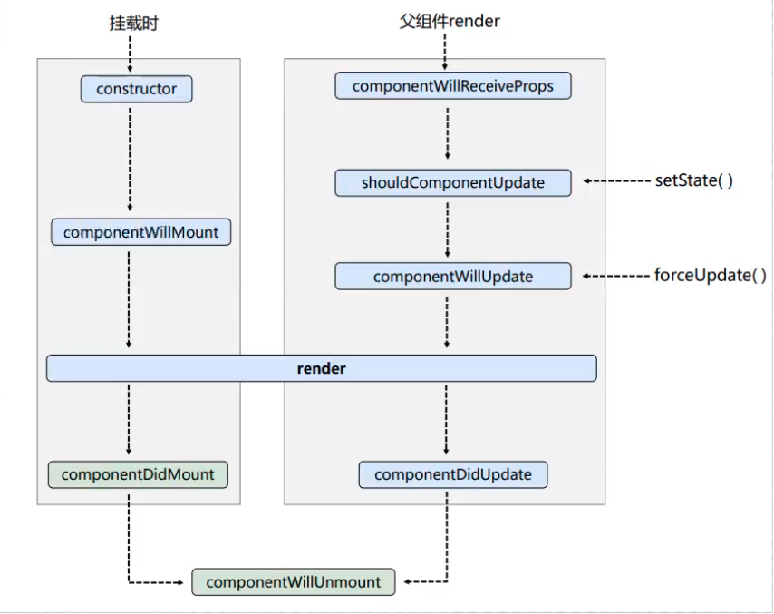

<!DOCTYPE html>
<html lang="en">
<head>
    <meta charset="UTF-8">
    <meta http-equiv="X-UA-Compatible" content="IE=edge">
    <meta name="viewport" content="width=device-width, initial-scale=1.0">
    <title>Document</title>
</head>
<body>
    <div id="root"></div>

    <script src="https://unpkg.zhimg.com/react@17.0.2/umd/react.development.js"></script>
    <script src="https://unpkg.zhimg.com/react-dom@17.0.2/umd/react-dom.development.js"></script>
    <script src="https://unpkg.zhimg.com/@babel/standalone/babel.min.js"></script>
    <script type="text/babel">
        class Count extends React.Component {

            state = {
                count: 0
            }

            // 构造器
            constructor(props) {
                super(props)
                console.log('Count---constructor...')   
            }

            // 组件将要挂载的钩子
            componentWillMount() {
                console.log('Count---componentWillMount...')
            }

            // 组件挂载完成的钩子
            componentDidMount() {
                console.log('Count---componentDidMount...')
            }
            
            // 组件将要卸载的钩子
            componentWillUnmount() {
                console.log('Count---componentWillUnmount...')
            }

            // 返回值决定组件是否更新
            shouldComponentUpdate() {
                console.log('Count---shouldComponentUpdate...')
                return true;
            }

            // 组件将要更新的钩子
            componentWillUpdate() {
                console.log('Count---componentWillUpdate...')
            }

            // 组件更新完成的钩子
            componentDidUpdate() {
                console.log('Count---componentDidUpdate...')
            }

            handleCum = () => {
                const {count} = this.state
                this.setState({
                    count: count+1
                })
            }

            handleUnmount = () => {
                ReactDOM.unmountComponentAtNode(document.getElementById('root'))
            }

            handleForceUpdate = () => {
                this.forceUpdate()
            }

            // 渲染
            render() {
                console.log('Count---render...')
                return (
                    <div>
                        <h2>count: {this.state.count}</h2>
                        <button onClick={this.handleCum}>Click Me +1</button><br/>
                        <button onClick={this.handleUnmount}>Unmount Component</button><br/>
                        <button onClick={this.handleForceUpdate}>Force Update</button><br/>
                        <div>
                            
                        </div>
                    </div>
                )
            }
        }

        // 父组件
        class A extends React.Component {

            state = {
                value: 0
            }

            change = () => {
                const {value} = this.state

                this.setState({
                    value: value + 1
                })
            }

            render() {
                return (
                    <div>
                        <p>我是A组件</p>
                        <button onClick={this.change}>切换</button>
                        <B value={this.state.value} />
                        <div>
                            
                        </div>
                    </div>
                )
            }
        }

        // 子组件
        class B extends React.Component {

            // 组件将要接收新的props的钩子
            componentWillReceiveProps(props) {
                console.log('B---componentWillReceiveProps ', props)
            }

            // 返回值决定组件是否更新
            shouldComponentUpdate() {
                console.log('B---shouldComponentUpdate...')
                return true;
            }

            // 组件将要更新的钩子
            componentWillUpdate() {
                console.log('B---componentWillUpdate...')
            }

            // 组件更新完成的钩子
            componentDidUpdate() {
                console.log('B---componentDidUpdate...')
            }

            render() {
                console.log('B---render...')
                return (
                    <div>
                        <p>我是B组件，从A组件接受到的值：{this.props.value}</p>
                    </div>
                )
            }
        }

        /* ReactDOM.render(<Count />, document.getElementById('root')) */
        ReactDOM.render(<A />, document.getElementById('root'))
    </script>
</body>
</html>